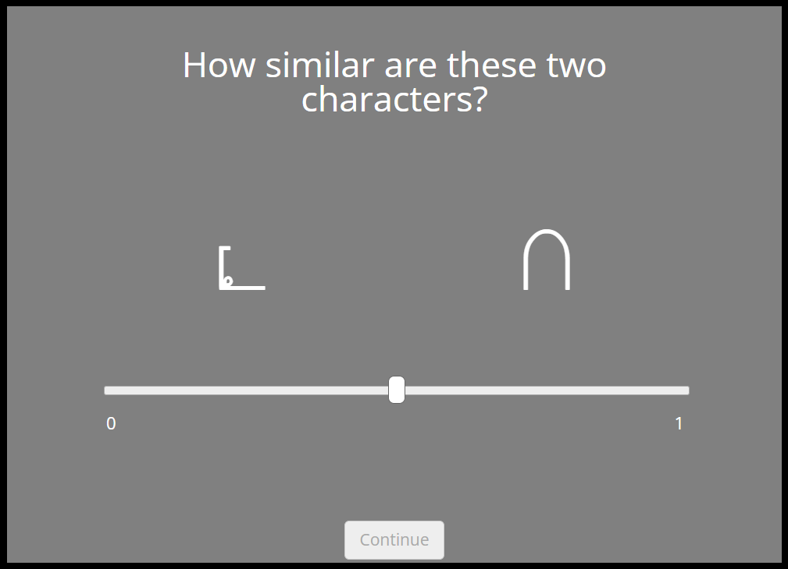

<!DOCTYPE html>
<html>
  <head>
    <title>BACS Similarity Experiment (part 2)</title>
    <!-- jsPsych & Pavlovia -->
    <script src="lib/vendors/jspsych-7.1.2/jspsych.js"></script>
    <script type="text/javascript" src="lib/jspsych-7-pavlovia-2022.1.1.js"></script>
    <!-- preload & setup -->
    <script src="lib/vendors/jspsych-7.1.2/plugin-preload.js"></script>
    <script src="lib/vendors/jspsych-7.1.2/plugin-fullscreen.js"></script>
    <!-- response plugins -->
    <script src="lib/vendors/jspsych-7.1.2/plugin-html-keyboard-response.js"></script>
    <script src="lib/vendors/jspsych-7.1.2/plugin-image-keyboard-response.js"></script>
    <script src="lib/vendors/jspsych-7.1.2/plugin-html-slider-response.js"></script>
    <!-- survey plugins -->
    <script src="lib/vendors/jspsych-7.1.2/plugin-html-button-response.js"></script>
    <script src="lib/vendors/jspsych-7.1.2/plugin-survey-html-form.js"></script>
    <script src="lib/vendors/jspsych-7.1.2/plugin-survey-multi-select.js"></script>
    <!-- formatting & styling -->
    <script type="text/javascript" src="lib/vendors/jquery-2.2.0.min.js"></script>
    <link rel="stylesheet" href="lib/vendors/jspsych-7.1.2/jspsych.css">
    <link rel="stylesheet" href="survey.css">
    <meta charset="utf-8"/>
  </head>
  <style>
    @font-face {
      font-family: "BACS";
      src: url('BACS1.otf') format('opentype'); 
    };
  </style>
  <body></body>
  <script>
    /* ========== INITIALISATION ========== */
    var jsPsych = initJsPsych({
      show_progress_bar: true,
      on_finish: function() {
        window.location = "https://app.prolific.co/submissions/complete?cc=XXXXXXX" // redirect Prolific participants to completed submission page -- CHANGE THIS LINK
      }
    });

    // capture info from Prolific
    var subject_id = jsPsych.data.getURLVariable('PROLIFIC_PID');
    var study_id = jsPsych.data.getURLVariable('STUDY_ID');
    var session_id = jsPsych.data.getURLVariable('SESSION_ID');

    jsPsych.data.addProperties({
      subject_id: subject_id,
      study_id: study_id,
      session_id: session_id
    });
    
    var timeline = [];

    /* init connection with pavlovia.org */
    var pavlovia_init = {
      type: jsPsychPavlovia,
      command: "init"
    };
    timeline.push(pavlovia_init);


    /* ========== STIMULI GENERATION ========== */
    var characters = ['A', 'B', 'C', 'D', 'E', 'F', 'G', 'H', 'I', 'J', 'K', 'L', 'M', 'N', 'O', 'P', 'Q', 'R', 'S', 'T', 'U', 'V', 'Y', 'Z', 'a', 'b', 'c', 'd', 'g', 'h', 'i', 'k', 'l', 'm', 'o', 'r', 't', 'u', 'v', 'y']; // BACS characters used in affix experiment

    var character_pairs = []; // make a list with every possible character pairing
    for (character of characters) {
      for (let i = 0; i < characters.length; i++) {
        character_pairs.push([character, characters[i]])
      }
    };

    function FisherYatesShuffle(array) { // list shuffling function
      var m = array.length, t, i;
      while (m) {
        i = Math.floor(Math.random() * m--);
        t = array[m];
        array[m] = array[i];
        array[i] = t;
      }
    return array;
    };

    var secondhalf_pairs = character_pairs.slice(-800); // select second half of pairs
    var character_pairs_shuffled =  FisherYatesShuffle(secondhalf_pairs); // shuffle the list of character pairs
    console.log(character_pairs_shuffled);


    /* ========== EXPERIMENT ========== */
    document.body.style.backgroundColor = "#808080"; // make background colour beige

    function changeTextColor(color) {
      var body = document.getElementsByTagName("body")[0];
      body.style.color = color;
    };

    changeTextColor("white"); // make default text colour white
    
    // Participant ID textbox
    var sbjIDPrompt = {
      type: jsPsychSurveyHtmlForm,
      preamble: '<p>Please enter your Prolific ID:</b></p>',
      html: '<input name="ID" type="text" required/></p>',
    };
    timeline.push(sbjIDPrompt);

    // welcome screen for the experiment
    var welcome = {
      type: jsPsychHtmlKeyboardResponse,
      stimulus: `<p style="font-size: 15px;">Welcome to the experiment. Before beginning, we ask that you read the consent information and confirm your agreement to participate in the experiment.</p>
      <p style="font-size: 15px;">We ask that you remember that this is a research project and that your participation is entirely voluntary. You can stop your participation at any time, without needing to provide any explanation. The study we're asking you to participate in aims at examining your perception of different letters. You will be engaged in a session of approximately 50 minutes, followed by a brief questionnaire. You will have the opportunity to take a few breaks during the experiment. You will be paid £6.67 for your participation, corresponding to a rate of £8/hour. While this experiment looks at cognitive faculties, this experiment doesn't constitute clinical proof of eventual pathologies.</p>
      <p style="font-size: 15px;">All of the information collected thanks to yours and others' participation will be held in a secure password-protected server, and will not be shared with anyone not authorised to view it. Your personal information will be kept with an arbitrary participant ID. Thanks to this data anonymity process, any researcher analysing the data won't be able to track the information back to a specific participant. Therefore, this process will make identifying you impossibile, even when results from the study will be published in scientific reviews, presented at congresses, or at any other public forum. More generally, the collected data will be treated in accordance with the laws on privacy and conformity to the Legislative Degree n. 196 "Code regarding the protection of personal data" of the 30th of June 2003 and to the European Regulation 2016/670  (General Data Protection Regulation - GDPR).</p>
      <p style="font-size: 15px;"> Before expressing your consent to participate, we would like to remind you again that in case you need explanations on any aspect of the experimental procedure, the researcher is at your disposition (<a href="mailto:aliebelt@sissa.it">aliebelt@sissa.it</a>, <a href="mailto:davide.crepaldi@sissa.it">davide.crepaldi@sissa.it</a>).</p>
      <p style="font-size: 15px;">If you wish to download the above informed consent form, please click here: <a href="BACS1SE_Informed-Consent.pdf" download>informed consent form</a>. Please press the spacebar to proceed to the consent form.</p>`,
      choices: ' '
    };
    timeline.push(welcome);
    
    // consent form
    var consent = {
      type: jsPsychSurveyHtmlForm,
      preamble: '<p style="text-align:left;">Please click the below options to give your consent to participate in the study. I further declare:</p>',
      html: `<p style="text-align:left;"><input name="consent1" type="radio" id="YES1" value="YES" required/><label for="YES1">to have carefully read the explanations relating to this study and to the entirety of the experimental procedure;</label></p>
      <p style="text-align:left;"><input name="consent2" type="radio" id="YES2" value="YES" required/><label for="YES2">to have been made aware of the goals and objectives of the study in question;</label></p>
      <p style="text-align:left;"><input name="consent3" type="radio" id="YES3" value="YES" required/><label for="YES3">to have had the possibility to ask questions regarding any aspect of the experimental procedure and to have received satisfactory answers;</label></p>
      <p style="text-align:left;"><input name="consent4" type="radio" id="YES4" value="YES" required/><label for="YES4">to be aware of any discomfort possibly caused by the experiment;</label></p>
      <p style="text-align:left;"><input name="consent5" type="radio" id="YES5" value="YES" required/><label for="YES5">to have received sufficient assurances on the confidentiality of information obtained from the following tests;</label></p>
      <p style="text-align:left;"><input name="consent6" type="radio" id="YES6" value="YES" required/><label for="YES6">to be aware that it's possible to stop participating at any phase of the study.</label></p>`
    };
    timeline.push(consent);

    // experiment instructions
    var instructions = {
      type: jsPsychHtmlKeyboardResponse,
      stimulus: `<p>Welcome, and thank you for your time!</p>
      <p>In this experiment, you'll be asked to judge how similar two letters are to each other. You'll be asked to answer on a scale from 0 to 1 how similar they are, with <strong>0</strong> being <strong>very dissimilar</strong> and <strong>1</strong> being <strong>very similar</strong>. Please try to use the entire scale provided, not just the extremes.</p>
      <p>Please press the spacebar to see the characters.</p>`,
      choices: ' '
    };
    timeline.push(instructions);

    // show whole character set
    var study_characters = {
      type: jsPsychHtmlKeyboardResponse,
      stimulus: `<p>Here are the characters you will rate. Please study these for 1 minute.</p><p></p>`,
      trial_duration: 60000,
      choices: "NO_KEYS"
    };
    timeline.push(study_characters);

    // example of the experiment (uses BACS characters unused in the experiment)
    var example = {
      type: jsPsychHtmlKeyboardResponse,
      stimulus: `<p>Here is an example of the screen you'll see to make your choice:</p>
      <p>Note that you can click on the scale instead of dragging the slider. When you're ready to start, please press the spacebar.</p></div>`,
      choices: ' '
    };
    timeline.push(example);

    // dividing the stimuli into blocks of 80 character pairs
    var set1 = character_pairs_shuffled.slice(0,80);
    var set2 = character_pairs_shuffled.slice(80,160);
    var set3 = character_pairs_shuffled.slice(160,240);
    var set4 = character_pairs_shuffled.slice(240,320);
    var set5 = character_pairs_shuffled.slice(320,400);
    var set6 = character_pairs_shuffled.slice(400,480);
    var set7 = character_pairs_shuffled.slice(480,560);
    var set8 = character_pairs_shuffled.slice(560,640);
    var set9 = character_pairs_shuffled.slice(640,720);
    var set10 = character_pairs_shuffled.slice(720,800);

    // creates a list with the relevant html code for each block
    var big_html = [];
    for (let m = 0; m < 20; m++) {
      var trials_html_block = [];
      if (m == 0) {var set = set1};
      if (m == 1) {var set = set2};
      if (m == 2) {var set = set3};
      if (m == 3) {var set = set4};
      if (m == 4) {var set = set5};
      if (m == 5) {var set = set6};
      if (m == 6) {var set = set7};
      if (m == 7) {var set = set8};
      if (m == 8) {var set = set9};
      if (m == 9) {var set = set10};
      for (let i = 0; i < set.length; i++) { // for testing of the structure, can change set.length to 2
        var html = `<div style="width:500px;"><p style="font-size: 30px">How similar are these two characters?</p>
          <div style="width:240px; float: left;">
          <p style="font-size: 80px; font-family: BACS">`+ set[i][0] +`</p></div><div style="width:240px; float: right;">
          <p style="font-size: 80px; font-family: BACS">`+ set[i][1] +`</p></div></div>`;
        var pairs_html_dict = {html: html, chara1: set[i][0], chara2: set[i][1]};
        trials_html_block.push(pairs_html_dict)
      };
      big_html.push({
        key: m,
        value: trials_html_block
      });
    };

    // BLOCK 1
    var n = 1; // counter for the number of blocks
    var block1_stimuli = big_html[0]; // selects html using stimuli for this block
    var block1_stimuli = Object.values(block1_stimuli);
    var block1_stimuli = block1_stimuli[1];

    var similarity_trial = { // defines the parameters for each trial
      type: jsPsychHtmlSliderResponse,
      stimulus: jsPsych.timelineVariable('html'),
      prompt: `<p style="font-size : 15px; margin-top: -50px;">Click any point on the slider to make your selection.</p>`,
      min: 0,
      max: 100,
      slider_start: 50,
      require_movement: true,
      labels: ['0', '1'],
      data: {
        character1: jsPsych.timelineVariable('chara1'),
        character2: jsPsych.timelineVariable('chara2')
      }
    };

    var similarity_procedure_block1 = { // sets timeline for each trial, pulling the html as the timeline variables
      timeline: [similarity_trial],
      timeline_variables: block1_stimuli
    };
    timeline.push(similarity_procedure_block1);

    // inter-block screen for a break & reporting on how many blocks done
    var inter_block = {
      type: jsPsychHtmlKeyboardResponse,
      stimulus: function () {
        var html = `<p>You've finished set `+n+`/10 of characters! You may take a short break, and press the spacebar when you're ready to continue.</p>`;
        n++;
        return html},
      choices: ' '
    };
    timeline.push(inter_block);

    // BLOCK 2
    var block2_stimuli = big_html[1];
    var block2_stimuli = Object.values(block2_stimuli);
    var block2_stimuli = block2_stimuli[1];

    var similarity_procedure_block2 = {
      timeline: [similarity_trial],
      timeline_variables: block2_stimuli
    };
    timeline.push(similarity_procedure_block2);

    timeline.push(inter_block);

    // BLOCK 3
    var block3_stimuli = big_html[2];
    var block3_stimuli = Object.values(block3_stimuli);
    var block3_stimuli = block3_stimuli[1];

    var similarity_procedure_block3 = {
      timeline: [similarity_trial],
      timeline_variables: block3_stimuli
    };
    timeline.push(similarity_procedure_block3);

    timeline.push(inter_block);

    // BLOCK 4
    var block4_stimuli = big_html[3];
    var block4_stimuli = Object.values(block4_stimuli);
    var block4_stimuli = block4_stimuli[1];

    var similarity_procedure_block4 = {
      timeline: [similarity_trial],
      timeline_variables: block4_stimuli
    };
    timeline.push(similarity_procedure_block4);

    timeline.push(inter_block);

    // BLOCK 5
    var block5_stimuli = big_html[4];
    var block5_stimuli = Object.values(block5_stimuli);
    var block5_stimuli = block5_stimuli[1];

    var similarity_procedure_block5 = {
      timeline: [similarity_trial],
      timeline_variables: block5_stimuli
    };
    timeline.push(similarity_procedure_block5);

    timeline.push(inter_block);

    // BLOCK 6
    var block6_stimuli = big_html[5];
    var block6_stimuli = Object.values(block6_stimuli);
    var block6_stimuli = block6_stimuli[1];

    var similarity_procedure_block6 = {
      timeline: [similarity_trial],
      timeline_variables: block6_stimuli
    };
    timeline.push(similarity_procedure_block6);

    timeline.push(inter_block);

    // BLOCK 7
    var block7_stimuli = big_html[6];
    var block7_stimuli = Object.values(block7_stimuli);
    var block7_stimuli = block7_stimuli[1];

    var similarity_procedure_block7 = {
      timeline: [similarity_trial],
      timeline_variables: block7_stimuli
    };
    timeline.push(similarity_procedure_block7);

    timeline.push(inter_block);

    // BLOCK 8
    var block8_stimuli = big_html[7];
    var block8_stimuli = Object.values(block8_stimuli);
    var block8_stimuli = block8_stimuli[1];

    var similarity_procedure_block8 = {
      timeline: [similarity_trial],
      timeline_variables: block8_stimuli
    };
    timeline.push(similarity_procedure_block8);

    timeline.push(inter_block);

    // BLOCK 9
    var block9_stimuli = big_html[8];
    var block9_stimuli = Object.values(block9_stimuli);
    var block9_stimuli = block9_stimuli[1];

    var similarity_procedure_block9 = {
      timeline: [similarity_trial],
      timeline_variables: block9_stimuli
    };
    timeline.push(similarity_procedure_block9);

    timeline.push(inter_block);

    // BLOCK 10
    var block10_stimuli = big_html[9];
    var block10_stimuli = Object.values(block10_stimuli);
    var block10_stimuli = block10_stimuli[1];

    var similarity_procedure_block10 = {
      timeline: [similarity_trial],
      timeline_variables: block10_stimuli
    };
    timeline.push(similarity_procedure_block10);

    var post_block = {
      type: jsPsychHtmlKeyboardResponse,
      stimulus: `<p>You've finished all of the character sets! Please press the spacebar to answer a few questions.</p>`,
      choices: ' '
    };
    timeline.push(post_block);


    /* ========== QUESTIONNAIRE ========== */
    // questionnaire for age, sex, knowledge of up to 4 languages (which languages they speak, and proficiency and age of acquisition for each)
    var bio_info = {
      type: jsPsychSurveyHtmlForm,
      preamble: '<p style="font-size: 25px; color: black">LANGUAGE INFORMATION</b></p>',
      html: `<legend>Age</legend><div><input name="Age" type="text" required/></p>
      <p><legend>Sex</legend><input name="Sex" type="radio" id="Female" name="Sex" value="Female" required/><label for="Female">Female</label><input type="radio" id="Male" name="Sex" value="Male"><label for="Male">Male</label><input type="radio" id="Other" name="Sex" value="Other"><label for="Other">Other/do not want to respond</label></p>
      <p style="color: #eb9c9a"><legend>What language would you consider as your <strong>FIRST LANGUAGE</strong>? (The language in which you feel most comfortable).</legend><input name="L1" type="text" required/></p>
      <legend>At what age did you start learning this language?</legend><input name="AoAL1" type="text" required/></p>
      <p><legend>How well can you speak this language?</legend>
      <input name="ProfL1" type="radio" id="ProfL1_0" value="0" required/><label for="ProfL1_0">0</label>
      <input name="ProfL1" type="radio" id="ProfL1_1" value="1" required/><label for="ProfL1_1">1</label>
      <input name="ProfL1" type="radio" id="ProfL1_2" value="2" required/><label for="ProfL1_2">2</label>
      <input name="ProfL1" type="radio" id="ProfL1_3" value="3" required/><label for="ProfL1_3">3</label>
      <input name="ProfL1" type="radio" id="ProfL1_4" value="4" required/><label for="ProfL1_4">4</label>
      <input name="ProfL1" type="radio" id="ProfL1_5" value="5" required/><label for="ProfL1_5">5</label>
      <input name="ProfL1" type="radio" id="ProfL1_6" value="6" required/><label for="ProfL1_6">6</label></p>
      <p style="color: #ac0d30"><legend>What language would you consider as your <strong>SECOND LANGUAGE</strong>?</legend><input name="L2" type="text" required/></p>
      <legend>At what age did you start learning this language?</legend><input name="AoAL2" type="text" required/></p><p><legend>How well can you speak this language?</legend>
      <input name="ProfL2" type="radio" id="ProfL2_0" value="0" required/><label for="ProfL2_0">0</label>
      <input name="ProfL2" type="radio" id="ProfL2_1" value="1" required/><label for="ProfL2_1">1</label>
      <input name="ProfL2" type="radio" id="ProfL2_2" value="2" required/><label for="ProfL2_2">2</label>
      <input name="ProfL2" type="radio" id="ProfL2_3" value="3" required/><label for="ProfL2_3">3</label>
      <input name="ProfL2" type="radio" id="ProfL2_4" value="4" required/><label for="ProfL2_4">4</label>
      <input name="ProfL2" type="radio" id="ProfL2_5" value="5" required/><label for="ProfL2_5">5</label>
      <input name="ProfL2" type="radio" id="ProfL2_6" value="6" required/><label for="ProfL2_6">6</label></p>
      <p style="color: #bfbcfc"><legend>What language would you consider as your <strong>THIRD LANGUAGE</strong>?</legend><input name="L3" type="text" required/></p>
      <legend>At what age did you start learning this language?</legend><input name="AoAL3" type="text" required/></p>
      <p><legend>How well can you speak this language?</legend>
      <input name="ProfL3" type="radio" id="ProfL3_0" value="0" required/><label for="ProfL3_0">0</label>
      <input name="ProfL3" type="radio" id="ProfL3_1" value="1" required/><label for="ProfL3_1">1</label>
      <input name="ProfL3" type="radio" id="ProfL3_2" value="2" required/><label for="ProfL3_2">2</label>
      <input name="ProfL3" type="radio" id="ProfL3_3" value="3" required/><label for="ProfL3_3">3</label>
      <input name="ProfL3" type="radio" id="ProfL3_4" value="4" required/><label for="ProfL3_4">4</label>
      <input name="ProfL3" type="radio" id="ProfL3_5" value="5" required/><label for="ProfL3_5">5</label>
      <input name="ProfL3" type="radio" id="ProfL3_6" value="6" required/><label for="ProfL3_6">6</label></p>
      <p style="color: #da9d37"><legend>What language would you consider as your <strong>FOURTH LANGUAGE</strong>?</legend><input name="L4" type="text" required/></p>
      <legend>At what age did you start learning this language?</legend><input name="AoAL4" type="text" required/></p>
      <p><legend>How well can you speak this language?</legend>
      <input name="ProfL4" type="radio" id="ProfL4_0" value="0" required/><label for="ProfL4_0">0</label>
      <input name="ProfL4" type="radio" id="ProfL4_1" value="1" required/><label for="ProfL4_1">1</label>
      <input name="ProfL4" type="radio" id="ProfL4_2" value="2" required/><label for="ProfL4_2">2</label>
      <input name="ProfL4" type="radio" id="ProfL4_3" value="3" required/><label for="ProfL4_3">3</label>
      <input name="ProfL4" type="radio" id="ProfL4_4" value="4" required/><label for="ProfL4_4">4</label>
      <input name="ProfL4" type="radio" id="ProfL4_5" value="5" required/><label for="ProfL4_5">5</label>
      <input name="ProfL4" type="radio" id="ProfL4_6" value="6" required/><label for="ProfL4_6">6</label></p>
      <p><legend>Do you speak any other languages?</legend><input name="otherLs" type="text" required/></p>`,
      data: {name: 'bio_info'}
    };
    timeline.push(bio_info);

    // goodbye screen
    var goodbye = {
      type: jsPsychHtmlKeyboardResponse,
      stimulus: `<p>Thank you for your participation! Please press the spacebar to finish.</p>`,
      choices: ' '
    };
    timeline.push(goodbye);

    // close connection with Pavlovia
    var pavlovia_finish = {
      type: jsPsychPavlovia,
      command: "finish"
      };
    timeline.push(pavlovia_finish);

    jsPsych.run(timeline);
  </script>
</html>